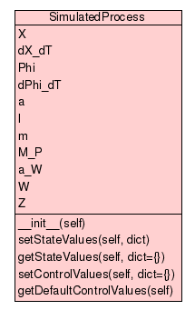

Trees
Indices
Help
Module SimulatedProcess
:: Class SimulatedProcess
[
hide private
]
[
frames
] |
no frames
]
Class SimulatedProcess
source code

Simulation of real process.
Instance Methods
[
hide private
]
__init__
(
self
)
Initialize the simulation.
source code
setStateValues
(
self
,
dict
)
source code
getStateValues
(
self
,
dict
=
{}
)
source code
setControlValues
(
self
,
dict
=
{}
)
source code
getDefaultControlValues
(
self
)
source code
Instance Variables
[
hide private
]
X
position [m]
dX_dT
velocity [m/s]
Phi
angle [rad]
dPhi_dT
angle velocity [rad/s]
a
acceleration [m/s²]
l
length of pendulum [m]
m
mass of pendulum [kg]
M_P
friction of bearing of pendulum expressed as torque [kgm²/s²=Nm]
a_W
friction of car expressed as acceleration [m/s²]
W
gain for incoming acceleration value
Z
disturbance
Trees
Indices
Help
Generated by Epydoc 3.0.1 on Tue Oct 27 21:04:21 2009
http://epydoc.sourceforge.net